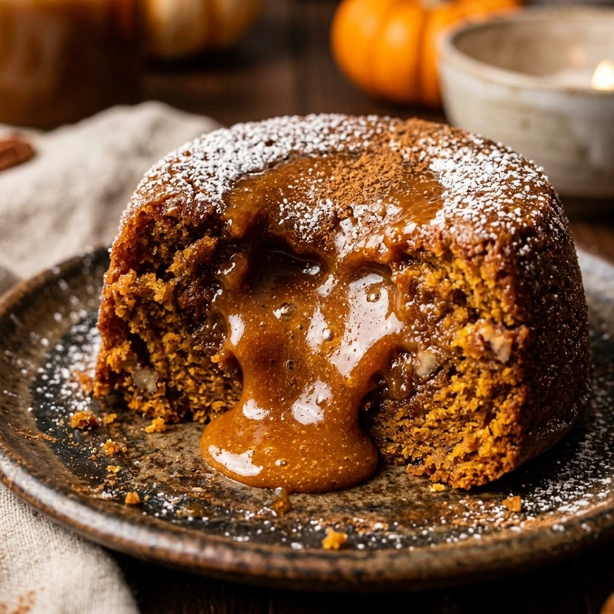

Pumpkin Caramel Lava Cakes Fall Recipe
October 17, 2026

As the leaves begin to turn and the air grows crisp, there is nothing quite like a warm, comforting dessert to celebrate the season. This Pumpkin Caramel Lava Cakes Fall Recipe is the ultimate autumn indulgence. It combines the earthy sweetness of pumpkin spice with a decadent, molten caramel center that flows out with the very first bite. It is a show-stopping dessert that looks impressive but is surprisingly simple to whip up in your own kitchen.
Recipe Information
Prep Time: 15 minutes
Cook Time: 15 minutes
Total Time: 30 minutes
Servings: 4
Difficulty Level: Medium
Nutrition Information
Calories per serving: 420 kcal
Protein: 6g
Carbohydrates: 52g
Fat: 22g
Fiber: 2g
Sugar: 34g
Sodium: 180mg